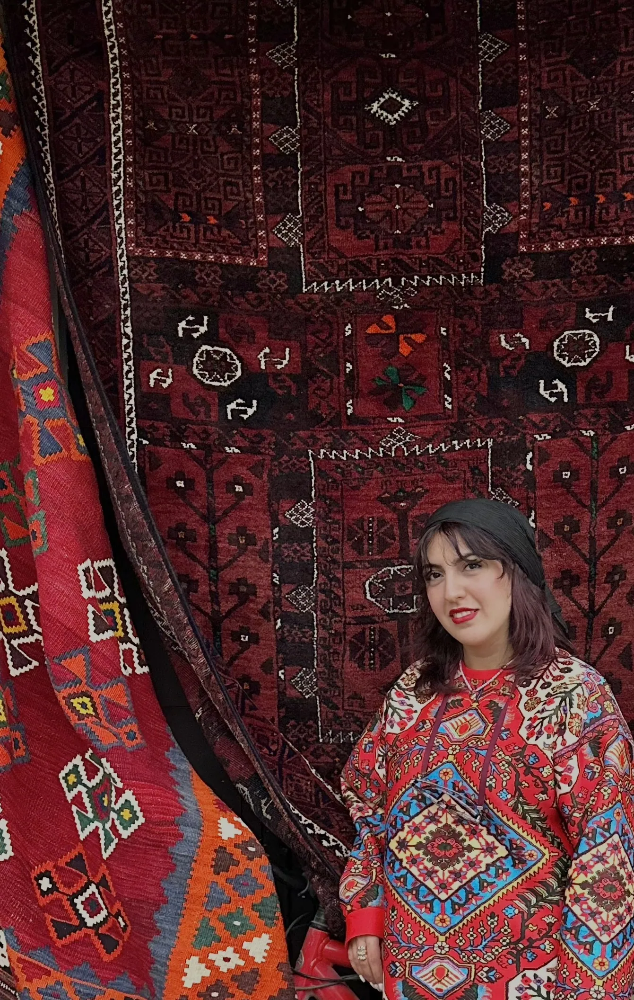

UX/UI Designer with a background in law, working on AI-powered products
As a practicing attorney with a passion for UX/UI design, I thrive on problem-solving and creative innovation. My fascination with UX/UI design comes from a desire to improve how people interact with technology. I am driven by the challenge of understanding user needs, crafting intuitive interfaces, and ultimately improving the user experience. Through empathy, research, and iterative design processes, I aim to create meaningful solutions that address real-world problems and empower individuals. My enthusiasm for growth and learning is constant. I approach every project with a mindset of continual improvement, actively seeking out opportunities to expand my skills, deepen my knowledge, and stay current with emerging trends and technologies in both the legal and design domains.
Combining my legal expertise with UX/UI design helps me approach problem-solving from multiple perspectives, fostering innovation and driving positive change. With a strong sense of camaraderie and a steady commitment to personal and professional development, I am excited to contribute to collaborative endeavors, support my team, and deliver meaningful outcomes.
Experience
- UX/UI Designer, TravlMate AI2025 – presentAI-powered travel platform
- UX/UI Designer, TruNorth2025AI career-coaching MVP, PM Accelerator bootcamp, ranked 3rd
- Lawyer2022 – presentContract drafting, legal research and legal writing
- Legal Services Office2019 – 2020
- UX/UI teaching and mentorshipPrivate instruction in research, wireframing, prototyping and design thinking
Education and certificates
- PM Accelerator Certificate2025Product management and AI-driven UX design
- Google UX Design Professional Certificate2023
- UX Design Course, UX Land2022 – 2023
- Bachelor of Law, Azad University2017 – 2019
Conferences
- AI-Driven Web Design & UX Architecture20256th International Conference on Computer Engineering, Electrical Technology
- AI-Based UI/UX Design for Precision & Efficiency202524th National Conference on Applied Research in Electrical Sciences, Computer Engineering & Biomedical Engineering